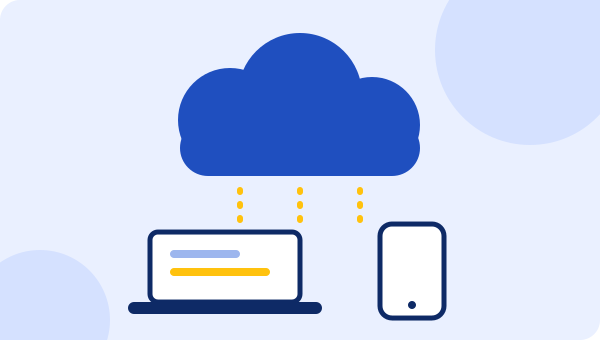

1С Fresh: аренда 1С в облаке без установки и серверов
Работайте в 1С через интернет с любого компьютера или телефона. Не нужны сервер, администратор и ручные обновления.
Получить консультацию
Что входит
- 1С:Fresh: доступ к программе через интернет из любой точки, без установки на компьютер
- 1С:БухОбслуживание: аутсорсинг бухгалтерского, налогового и кадрового учёта в программах 1С
- Облачный архив: автоматическое резервное копирование и безопасное хранение баз
- Перенос вашей текущей базы в облако
- Настройка доступов для сотрудников и бухгалтера
Для кого
Для небольших компаний, ИП и филиалов, у которых нет сервера и IT-специалиста, и для тех, кто работает удалённо или из разных городов.
Как проходит работа
- Выбираем программу и тариф под ваши задачи
- Подключаем облако и создаём базу или переносим текущую
- Настраиваем доступы для сотрудников
- Показываем, как войти и работать
- Обновления и резервные копии выполняются автоматически
Сроки и стоимость
Подключение занимает 1 рабочий день. Стоимость аренды: от [ЗАМЕНИТЬ: сумма] ₸ в месяц за пользователя.
Частые вопросы
Чем 1С Fresh отличается от обычной 1С?
Программа та же, но работает на серверах сервиса. Вы заходите через браузер, а обновления и резервные копии выполняются без вашего участия.
Безопасны ли мои данные в облаке?
Базы хранятся на защищённых серверах с резервным копированием. Доступы выдаются каждому сотруднику отдельно.
Можно ли перенести мою базу в облако?
Да, переносим данные из вашей текущей базы 1С.
Что даёт 1С:БухОбслуживание?
Бухгалтерия, налоги и кадры ведутся специалистами в 1С, вам не нужен штатный бухгалтер.
Расскажите о задаче, и мы предложим решение
Консультация бесплатная. Ответим в рабочее время в течение часа.
Оставить заявку Позвонить +7 707 300 00 93